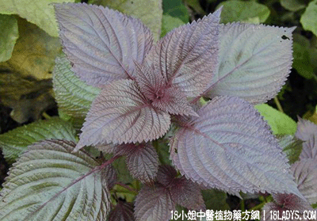

紫苏叶(中草药名称:紫苏)(科目:唇形科)

植物名：紫苏。
生长环境：本品为一年生直立草本，常栽培于庭院中，在路旁及废圩也有自生。
分布：我国中部及东南各省均有分布。
入药部分：全草，叶为主。
采集期：夏，秋多。
自采地点：家种。
性味：性湿、味辛、气香。
功能：祛风消肿，止痒。
主治、用量和用法：风热肿痛，配伍用。
验方：（治风热肿痛外洗方）紫苏叶1两，毛麝香1两、忍冬叶1两、扁柏1两、煎水洗患处。
（方解）紫苏、毛射香祛在表之风邪，忍冬叶性凉解毒。扁柏止肤痒。此方以凉解见长，治风热甚效。
（方歌）风热肿痛用紫苏，毛射忍冬扁柏曹，凉解祛风能消肿，煎水外洗疾能苏。
参考资料：《广东省中医验方交流汇编》治视觉异常方：紫苏叶1钱、生姜三片、煎好之后入醋一匙，服三剂全愈。治一人如见两人。
《湖南中医单方验方第二辑》治对口疮初起肿痛者：紫苏叶1握，捣烂成泥敷患处。
又治蛇头疔及泥鳅肚初起方：紫苏叶1味、洗净，口嚼烂，包患处。24小时消退。